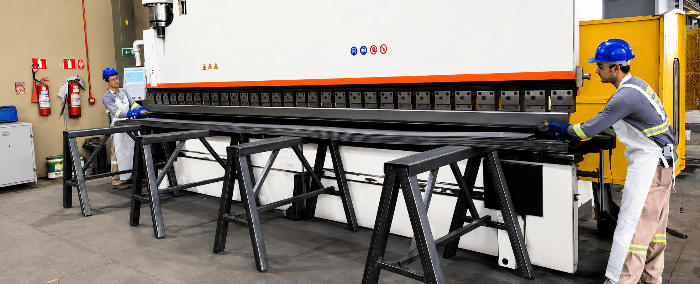

11 unidades, 2 estados
Cobertura em São Paulo e Mato Grosso, com mix adaptado à demanda de cada região.
Desde 1987, o Grupo Vocical distribui produtos e soluções para construção civil e indústrias, operando por 11 unidades em São Paulo e Mato Grosso.

O Grupo Vocical nasceu em 1987 como Vocical Distribuidora Votuporanga de Cimento e Cal. Em mais de três décadas, cresceu para um grupo de seis marcas e onze unidades, atendendo clientes em São Paulo, Mato Grosso e diversos estados do país.
O foco sempre foi o mesmo: abastecer obras e indústrias com disponibilidade, prazo e atendimento de quem entende do canteiro.
De uma distribuidora de cimento e cal em Votuporanga a um grupo de 11 unidades. Veja como a rede cresceu, ano a ano.
A história começa como Vocical Distribuidora Votuporanga de Cimento e Cal, com a proposta de entregar o básico da obra com excelência.
A Jacical nasce como distribuidora forte em cimento, telhas e aço, ampliando o alcance no noroeste paulista.
A Rio Preto Cimento e Cal reforça a presença no noroeste de São Paulo, com foco nos essenciais da obra.
A Robracon leva aço, chapas e, hoje, drywall sob medida para Rondonópolis, primeira operação do grupo fora de São Paulo.

A Ello Forte chega a Ribeirão Preto com cimento, vergalhão e serralheria para o eixo de obras da região.

A Ello Forte São Carlos amplia o atendimento com itens estruturais e de giro para o interior de São Paulo.

Piracicaba, Itu e Itapetininga ganham distribuidoras focadas em agilidade e reposição de produtos de giro.
A capital mato-grossense passa a contar com aço e chapas sob medida pela Robracon Cuiabá.
A Robracon Sinop abre a operação mais recente do grupo, com foco em atendimento B2B e corte e dobra.
O Grupo Vocical opera 11 unidades em São Paulo e Mato Grosso, atendendo também clientes em MS, MG e GO.
Três compromissos que sustentam cada relação e cada entrega, da matriz em Votuporanga às unidades de Mato Grosso.
Mais de três décadas sustentando relações de confiança com clientes e fornecedores.
Processos ágeis, comunicação clara e foco em resultado, do orçamento à expedição.
Do primeiro contato à entrega no canteiro, assumimos o prazo combinado e fazemos acontecer.
Cobertura em São Paulo e Mato Grosso, com mix adaptado à demanda de cada região.
Frota própria em parte das unidades e freteiros parceiros nas demais, para abastecer o canteiro com previsibilidade.
Vergalhão, aço armado e chapa cortados e dobrados conforme o seu projeto.
Apoio no quantitativo, alternativas de produto e orçamento técnico rápido.
 Quem atendemos
Quem atendemos
Reposição de giro e mix completo para a loja não perder venda.
Fale conosco Quem atendemos
Quem atendemos
Aço, cimento e fechamento com prazo previsível para o cronograma da obra.
Fale conosco Quem atendemos
Quem atendemos

Quem atendemos Quem atendemos
Quem atendemos
 Quem atendemos
Quem atendemos
 Quem atendemos
Quem atendemos
Fale com o time do Grupo Vocical e descubra a unidade mais perto de você.
Fale Conosco